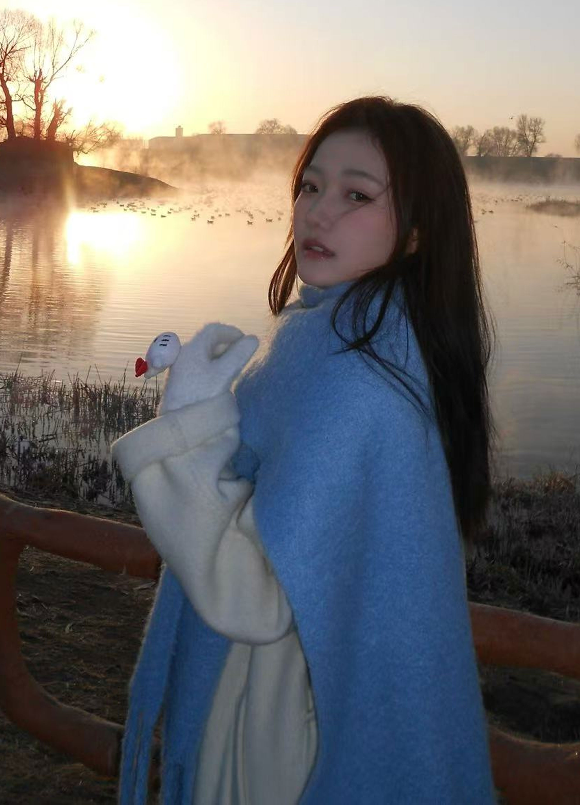
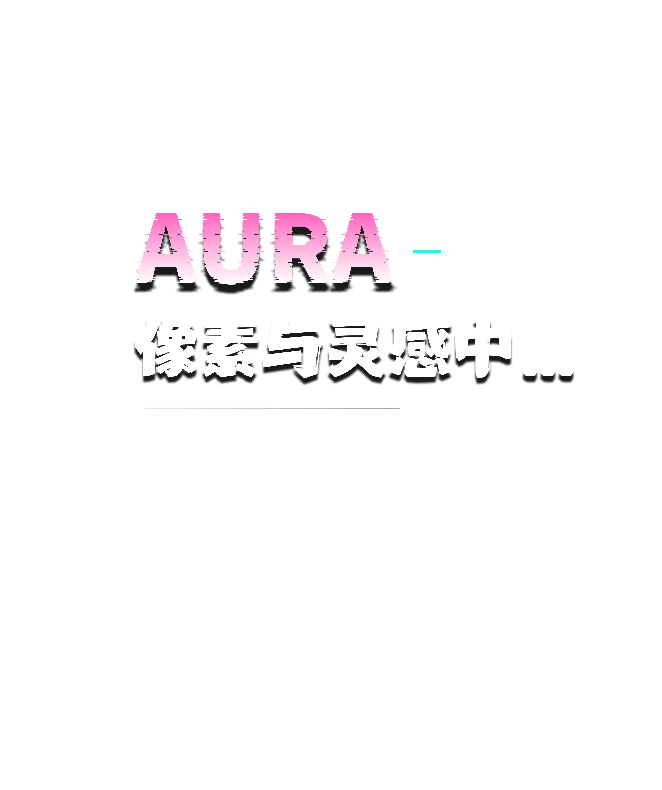
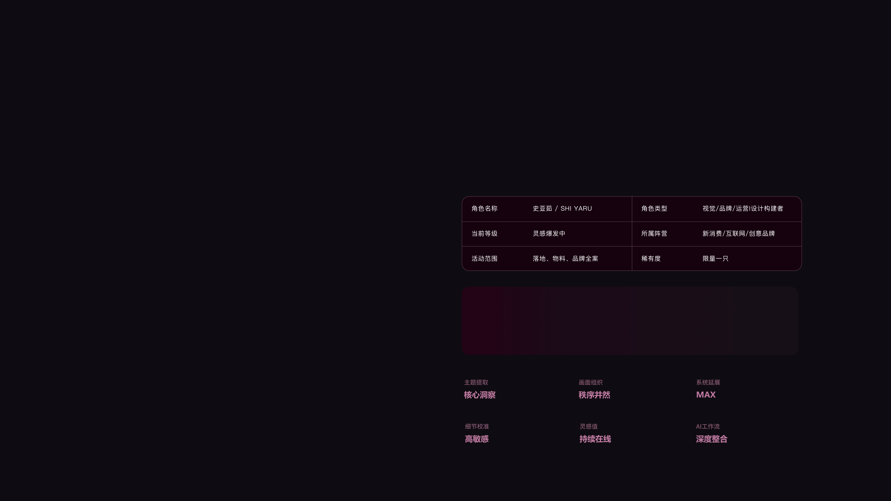
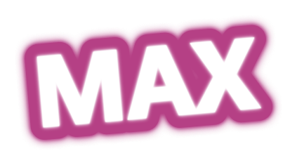
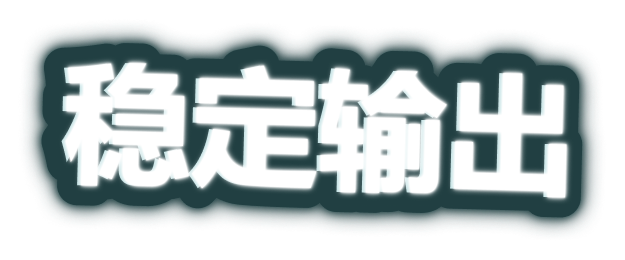
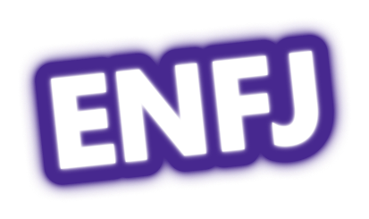
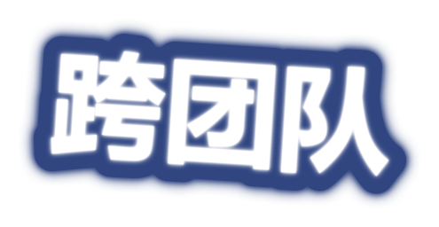
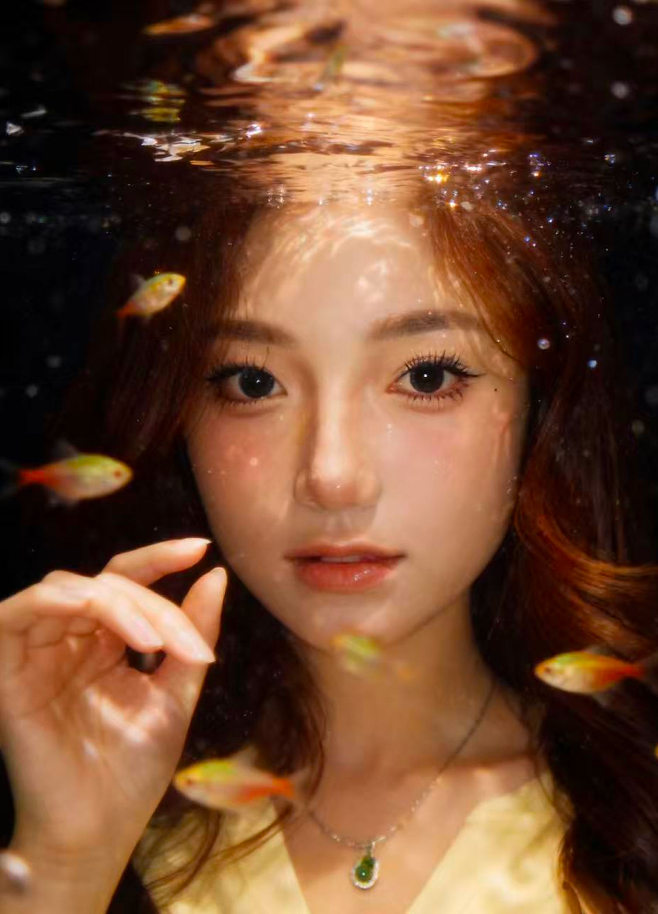

主题提取MAX
画面组织稳定输出
系统延展MAX
细节校准高敏感
灵感值随机刷新
AI工作流绝大部分

SELECTED EXPERIENCE工作经历Multi-scenario visual design
独立负责画室品牌视觉体系维护，完成招生海报、美育课件等物料设计排版，遵循品牌视觉规范，适配线下课堂、线上小红书、朋友圈多场景传播。
主导30+品牌活动海报、宣传单页、门店KT板等物料，协助设计团队完成品牌VI系统升级及宣传物料设计，完成5+次营销活动视觉策划，支持线下门店营销落地。 从0到1完成“喵小侠”IP形象的设计与数字化落地，通过搭建品牌专属AI工作流实现IP形象在不同场景高效生成。
主要解决机构招生宣传与日常运营的设计需求。完成课程海报、招生简章、课程卡等50+物料设计与排版，同时主导20+套趣味美术课程的视觉内容设计，辅助教学成果转化。
负责婚纱样册、H5及画册等营销物料设计，通过优化排版布局与视觉风格，提升品牌视觉质感。兼顾图片色彩校正与精修，匹配客户需求。
个人技能
项目概述 →
项目主要聚焦视觉全链路设计，图统餐饮品牌、多终端交互到视觉营销价值与 AIGC 应用方向。构建线上线下视觉体验全链路。
05 / STRENGTHS
我擅长的，
不止设计。
从一个想法出发，走到它真正发生。
01
从 0 到 1
构建品牌
VISUAL SYSTEM
从定位、概念到视觉系统，建立一套能被团队使用、被用户记住的品牌语言。
02
让创意
落到业务
BUSINESS IMPACT
理解目标与限制，用清晰的设计决策支持传播、转化和真实的商业结果。
03
AI 加速
工作流
AI WORKFLOW
将 Midjourney、ComfyUI 等工具融入流程，快速探索更多可能，保持高质量产出。
04
好沟通
也能推进
COLLABORATION
跨团队协作，主动同步、拆解问题，让每个项目都在可控节奏里向前。